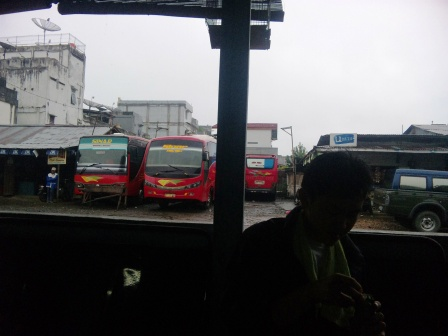

11日目～運転手との決別、警察署への連行～

小雨が降っていたが、今までで一番すがすがしい朝だったような気がする。いよいよ忌々しい暴走運転手から解放されるのだ。黙って去ってもよかったのだが、一応マナーのため置手紙を残した。内容は、運転手とレンタカー会社が僕たちとの約束を完全に破ったから、あなたは車とともにジャカルタへ帰りなさいというものだった。パガララムの町からはブキティンギまで行くバスが出ているとは思えなかったので、おそらくジャカルタからブキティンギへの長距離バスの通り道になっていると思われるスマトラ島を縦貫する道の沿線のラハッの街まで出て行こうと思った。まずはバスターミナルへ行かねばならない。

通りがかった車がクラクションを鳴らして僕たちに合図してきた。乗合タクシー(ベモ)のようだ。ラハッまで行くバスターミナルまで連れて行ってもらうことになった。

運転手は最初は自信満々にバスターミナルまで行ってあげようという雰囲気だったが、途中から自信があるのかないのか怪しげな雰囲気を感じたため、とりあえずバスが数台止まっていた場所まで引き返してもらい、ベモを降りた。窓口で聞いてみると、ラハッまでのバスはあるということだった！これで完全に運転手から逃げることができると僕たちは興奮を隠しきれなった。

ラハッに向かうバスの車窓からは今日も見渡す限りのジャングルが見えた。雨はやみ、晴れ間がのぞく。僕たちのこれからの旅路が良好であるかをしめしているかのようだったが、実際は違った。ラハッに着いたはいいのだが、バスはしばらく市内をウロウロした後、僕たちを警察署の前で降ろした。本当は降りたくなどなかったのだが、バスの乗務員が降りなさいというから仕方がなかった。警官が僕たちにパスポートの提示を求め、しばらく署で待つように言った。最初は、町に入る前の検問のようなものかと思ったが、大井は運転手が通報したのではないかと予想した。最初はそんなまさかと否定してしまったが、大井の予想は見事的中した。警察官はみなフレンドリーで、昼飯をただで御馳走になれたことはよかった。今まで食べてきたものよりもおいしいくらいの温かいメニューだった。小一時間ほど待つと、例の車に乗った運転手とパガララムの警官がやってきた。もうこうなってしまっては逃げも隠しもせず、僕たちがあった災難を正直に打ち明けるしかない。幸い、警官にはある程度英語が通じ、ある警官はある程度日本語のわかる人と電話で話させてくれた。僕たちがだまされたことを強調して伝えると、もうこれ以上運転手とは旅を続けたくないという僕たちの言い分が通った。運転手はとても悔しそうな顔をしていた。運転手はそれなら帰りの交通費や食費などを出せと言ってきたが冗談じゃない。その気があるならあらかじめ金を払ってから決別するにきまっている。警官たちは、もう安心しろ、ブキティンギまで行くバス停まで連れて行ってあげるといった。このときは警官たちを信じていた。とてもありがたいことだと思った。しかし、いろんな町をめぐりこの町には適当なバスがないということで、ブキティンギとは正反対の町に向かいだした。もうすぐ日も暮れようとしている。その町にたどり着く前に、すれ違ったバスを止めると、警官たちはこのバスに乗りなさいと言ってきた。ところが、その時警官たちがこの額を渡しなさいといったその額は、飛行機でジャカルタからブキティンギに近いパダンの街まで行った時の2倍ほどの額だったのだ。ビップクラスのバスとは言っても、それは法外である。警官たちはまじめな顔をしていたが、それくらいの金銭感覚はあるだろう。バスの運転手がぼっている可能性もあるが、いくらか警官たちにも取り分があることは疑いようがなかった。もしその額を払ってしまったら僕達の旅は途中で行き詰ってしまう可能性が大きい。警官たちの申し出をお金がないということを強調して伝え、引き返すように懇願した。警官たちはあきれたような、残念そうな顔をしていた。相当な額のお金が手に入ると期待していたのだろう。親切心はうれしいのだが、リーズナブル旅行をしている僕たちにお金を期待されても困る。警察署のあるラハッまで引き返すとまた警官たちに有難迷惑なおせっかいを焼かれると思ったので、途中のモレイニムという町で降ろしてもらうようにお願いした。引き返した地点からモレイニムまでは本当に長く感じた。早く解放してほしいと思った。モレイニムの町では宿のあては何もなかったが、ある程度栄えているところで降ろしてもらった。もうあまり警官たちとはかかわりたくなかったのだが、案の定警官たちは、帰りの交通費を払えと言ってきた。まさに予想的中だった。自分自身疑心暗鬼になり、恥ずかしいことだがもうインドネシアの人たちは全く信用できないと偏った考えまでその時は思ってしまった。お世話になったのは確かだが、彼らが僕たちにしてくれたことで有難かったことなど何一つとしてなかったのだ。ラハッの警察署で解放してくれた方がどれだけ良かったことか。

金を請求されてからは、お金は持っていないと足早に彼らのもとを立ち去り、あてもなく街を歩いた。すると、幸運にも「ロスメンこっち」という看板が見つかった。この宿は一人200円ちょいと驚きの安さ。簡素なつくりではあったが、ビントゥアンのロスメンの酷さとは比べ物にならないくらいだった。今日は今までで一番疲れた日かもしれない。悪事をしたとは思えなかったので不思議と焦ったりすることはなかったのだが、せっかく運転手と離れられると思ってから再び拘束されたという心労も大きかったし、お金目当ての警官たちに愛想をふりまくのは大変だった。しかしこれで、明日からは本当に3人だけの旅が楽しめるはずだ。
翌日へ